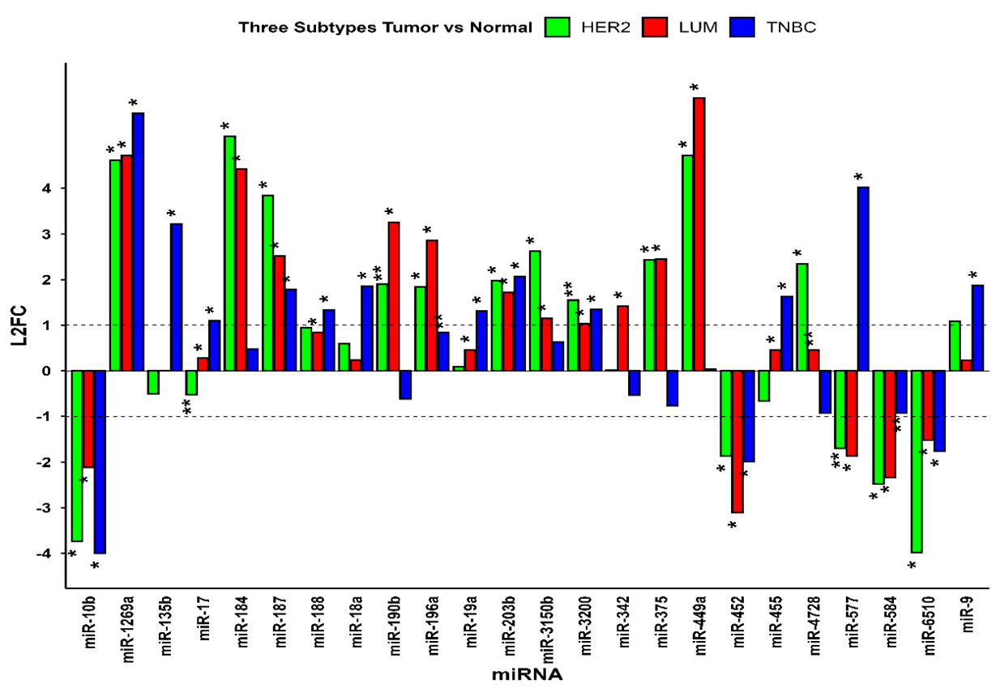
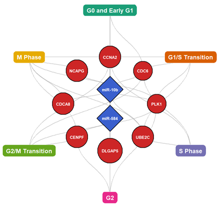

Current Research Focus
My core research investigates the role of Non-coding RNAs in Breast Cancer utilizing Next Generation Sequencing data and Machine Learning. By analyzing miRNA-gene interactions and pathway enrichments across different breast cancer subtypes (such as LUM, HER2, and TNBC), I aim to identify significant prognostic markers and build predictive computational models.
Visualizing miRNA-Gene Interactions and Classification
Below are key visualizations from my recent analysis detailing differential expression, machine learning-based clustering, and target gene interaction networks.


Selected Publications
miR-181d coordinates homologous recombination and anti-tumor immune responses in glioblastoma
An Epigenetics-Based Signature Prognostic Model for Breast Cancer Survival
Harnessing ferroptosis to transform glioblastoma therapy and surmount treatment resistance
Glioblastoma at the crossroads: current understanding and future therapeutic horizons
Unveiling Novel Avenues in mTOR-Targeted Therapeutics: Advancements in Glioblastoma Treatment
Small Molecule Targeting Immune Cells: A Novel Approach for Cancer Treatment